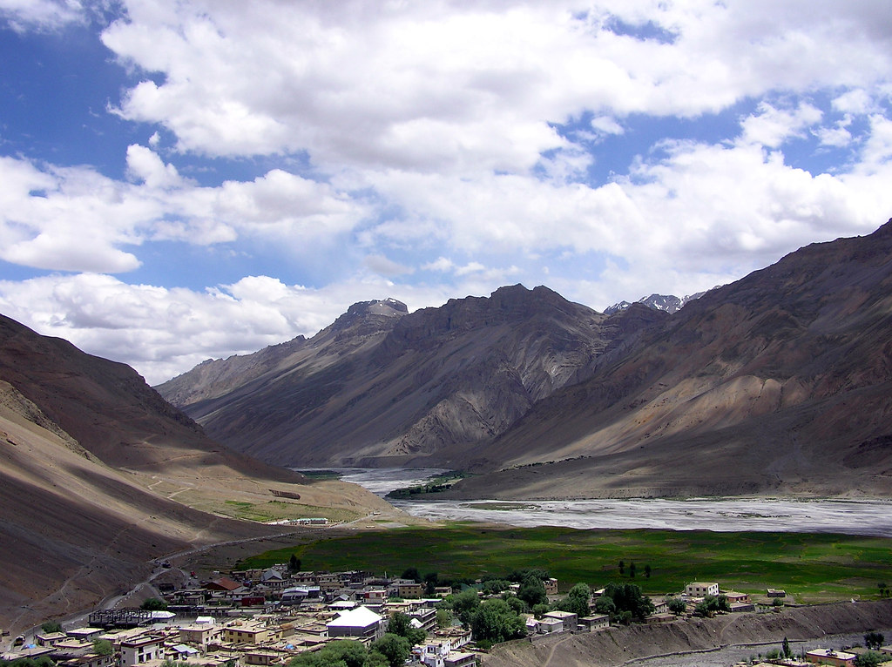
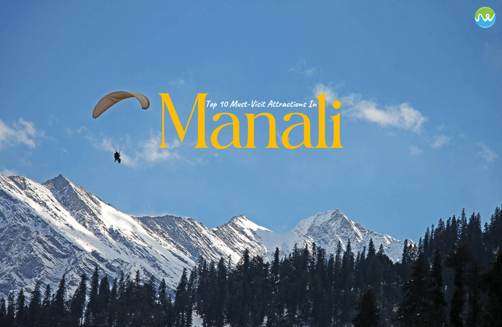

Himachal Pradesh Trip Itinerary
Trip Overview
Dear Majid khan,
Greetings from Deyor Adventures.
Our sales team has put up this Quote regarding your upcoming trip. Please go through it and let's know if you would like any changes in any of the provided services. Contact details are provided at the end.
Destination: Himachal Pradesh
Start Date: 17 August, 2025
Duration: 7 Nights / 8 Days
PAX: 4 Adults
Trip ID: 2047802
Price: 1,05,110/-
(including gst)
Accommodation Details
Sangla Mansion - 2 Deluxe Rooms (Dinner + Breakfast)
Kalpa Mansion - 2 Deluxe Rooms (Dinner + Breakfast)
Chandrataal Camps - 2 Deluxe Rooms (Dinner + Breakfast)
River Pine Resorts & Spa, Manali - 2 Deluxe Rooms (Dinner + Breakfast)
Transportation
Transportation Used: 1-HIM - Ertiga
| Day | Service |
|---|---|
| 1st Day Sun, 17 Aug |
Chandigarh to Shimla - Transfer |
| 2nd Day Mon, 18 Aug |
Shimla to Sangla - Transfer and Sightseeing |
| 3rd Day Tue, 19 Aug |
Sangla to Kalpa - Transfer and Sightseeing via Chitkul Village |
| 4th Day Wed, 20 Aug |
Kalpa to Kaza - Transfer and Sightseeing |
| 5th Day Thu, 21 Aug |
Kaza - Local Sightseeing |
| 6th Day Fri, 22 Aug |
Kaza to Chandrataal - Transfer and Sightseeing |
| 7th Day Sat, 23 Aug |
Chandrataal to Manali - Transfer and Sightseeing |
| 8th Day Sun, 24 Aug |
Manali to Chandigarh - Transfer to Airport |
Day Wise Itinerary
Day
Sunday 17th August, 2025
Chandigarh to Shimla - Transfer
Travel from Chandigarh to Shimla by road (approx. 115 km, 4-5 hours). Drive through the scenic Shivalik Hills, passing towns like Parwanoo and Solan. Arrive in Shimla ready to explore its colonial charm and breathtaking hilltop views.
Day
Monday 18th August, 2025
Shimla to Sangla - Transfer and Sightseeing
Travel from Shimla to Sangla (around 220 km, 7-8 hours). The scenic drive takes you through Rampur and follows the beautiful Baspa River. Upon arrival in Sangla, enjoy views of the majestic Kinner Kailash Range, explore the quaint villages, visit Bering Nag Temple, and enjoy the lush orchards and peaceful surroundings.
Day
Tuesday 19th August, 2025
Sangla to Kalpa - Transfer and Sightseeing
Travel from Sangla to Kalpa via chitkul village. First visit chitkul village.The scenic drive takes you along the Baspa River, passing through the picturesque village of Reckong Peo. Upon reaching Kalpa, enjoy views of the Kinnaur Kailash Range, visit Suicide Point, explore Roghi Village, and relax amidst the serene landscape.
Day
Wednesday 20th August, 2025
Kalpa to Kaza - Transfer and Sightseeing
Kalpa to Kaza (200 km) offers stunning views of Nako Lake, Tabo Monastery, Dhankar Monastery, and Pin Valley. The route passes through Reckong Peo, Malling Nallah (landslide-prone), and Spiti’s rugged terrain—a true Himalayan adventure!
Day
Thursday 21th August, 2025
Kaza - Local Sightseeing
Explore Kaza, Spiti's vibrant capital, nestled along the Spiti River. Visit the ancient Sakya Tangyud Monastery, then browse the local Kaza Market for Tibetan souvenirs. Drive to Key Monastery, a 1,000-year-old marvel. Experience the tranquility of Chicham Bridge, Asia’s highest. Enjoy local cuisine at cozy cafés with stunning valley views.
Day
Friday 22nd August, 2025
Kaza to Chandrataal - Transfer and Sightseeing
Leave Kaza, driving through barren Spiti landscapes via Losar, the last village before Kunzum. Ascend the majestic Kunzum Pass (4,551m), offering stunning Himalayan vistas. Take a thrilling off-road detour to Chandratal Lake, where its shimmering blue waters contrast against the rugged terrain. Camp under a starlit sky, embracing Spiti’s surreal beauty.
Day
Saturday 23rd August, 2025
Chandrataal to Manali - Transfer and Sightseeing
Leave Kaza, driving through barren Spiti landscapes via Losar, the last village before Kunzum. Ascend the majestic Kunzum Pass (4,551m), offering stunning Himalayan vistas. Take a thrilling off-road detour to Chandratal Lake, where its shimmering blue waters contrast against the rugged terrain. Camp under a starlit sky, embracing Spiti’s surreal beauty.
Day
Sunday 24th August, 2025
Manali to Chandigarh - Transfer to Airport
Leave Kaza, driving through barren Spiti landscapes via Losar, the last village before Kunzum. Ascend the majestic Kunzum Pass (4,551m), offering stunning Himalayan vistas. Take a thrilling off-road detour to Chandratal Lake, where its shimmering blue waters contrast against the rugged terrain. Camp under a starlit sky, embracing Spiti’s surreal beauty.
Inclusions
- ✔️ Private Vehicle Transfer
- ✔️ Accommodation
- ✔️ Meals (Dinner + Breakfast)
- ✔️ Toll, Parking & Driver Charges
- ✔️ Pickup & Drop
- ✔️ 5% GST
Exclusions
- ❌ Personal Expenses / Tips / Permits
- ❌ Guide / Porters
- ❌ Meals not mentioned in itinerary
- ❌ Unforeseen expenses (medical, natural disasters, etc.)
- ❌ Rohtang Pass extra charges
Terms & Conditions
By booking with Deyor, you agree to the terms including booking process, payment policies, cancellations, and travel documentation requirements.
Welcome to Deyor, These Terms and Conditions govern your use of the Deyor services. When You Make a booking or reservation, you agree to be bound by these Terms.
- Bookings and Reservations Process: When you make a booking or reservation through Deyor, you agree to provide accurate and complete information. Any discrepancies or errors in the information you provide may result in the cancellation of your booking.
- Change in Stay: Deyor holds the right to shift the hotel to the similar category at any point of time.
Payment & Terms
-
Payment Details
UPI ID: deyor.adventures@icici
-
Bank Details
Account Number: 50200020693595
IFSC Code: HDFC0000485
Bank Name: HDFC Bank
Branch: Udyog Vihar, Gurgaon
Beneficiary Name: Deyor Adventures Private Limited -
Payment
Payments for bookings are due as specified during the booking process. Failure to make payments on time may result in the cancellation of your booking.
-
Confirmation
Your booking is considered confirmed only upon receipt of payment and confirmation from Deyor. Please review all booking details carefully to ensure accuracy.
-
Changes and Cancellations
Changes to bookings or cancellations may be subject to fees or penalties, as determined by the service providers (e.g., airlines, hotels, tour operators) and Deyor. These fees and penalties may vary depending on the service and the timing of the change or cancellation.
-
Travel Documents and Requirements
Passports and Visas: It is your responsibility to ensure that you have a valid passport and any required visas or travel documents for your trip. Deyor is not responsible for any issues arising from the lack of proper travel documents.
Health and Vaccinations: You are responsible for ensuring that you meet all health and vaccination requirements for your travel destinations. -
Travel Insurance
We strongly recommend that you purchase travel insurance to protect against unexpected events such as trip cancellations, delays, or emergencies during your travel. Deyor can assist you in obtaining travel insurance, but the decision to purchase it is ultimately yours.
-
Changes to Itineraries
By Deyor: We reserve the right to make changes to your itinerary or accommodations due to unforeseen circumstances. We will make every effort to inform you of such changes as soon as possible.
By You: Any changes requested by you to your itinerary may be subject to fees or penalties, as determined by the service providers and Deyor. -
Liability
Service Providers: Deyor acts as an intermediary between you and service providers such as airlines, hotels, and tour operators. We are not liable for any actions, omissions, or negligence on the part of these service providers.
Force Majeure: Deyor is not liable for any disruptions, cancellations, or delays caused by circumstances beyond our control, including natural disasters, strikes, political unrest, or other force majeure events. -
Governing Law and Jurisdiction
These Terms and your use of Deyor are governed by the laws of Gurgaon, and any disputes shall be resolved in the courts of Gurgaon.
-
Changes to Terms and Conditions
We reserve the right to update and modify these Terms and Conditions at any time. Please review them periodically for changes. Your continued use of our services after any modifications indicates your acceptance of the updated Terms.